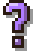
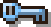

SHEET 64 · QUESTIONS AND OKS
v3 · 22 Oct, night · tag 1, the coloured frame back, colours taken from his marks, the who is a door to Claude
Your tag 1 stays. The wood frame and its tail take the kind's colour again, like before. Every colour is now the exact colour of the mark over Aang's head, shown beside each bubble. "Claude's words" is gone; "Exactly this" stays on OKs only. And on a Claude ask, the "Claude · Waymark" label is the door: click it and you are in that session.
Tag 1: deep colour, white wordsFrame + tail tinted againColours = the marksNo "Claude's words""Exactly this" on OKs onlyWho = door to ClaudeKeys wait for a hover
WHAT TO PICK Nothing to choose. Just say yes (or what to change) and it gets built. One check: is the frame tint calm enough?
1TAG 1 + THE COLOURED FRAME, MATCHED TO THE MARKS
Each kind's colour is copied straight from the code that draws the marks over Aang's head (ClaudeMarks.cs). The frame, the tail, the faint paper glow and the tag's icon are that exact colour. The tag's background is the same colour made deep so white words read on it. The plan's cream can't hold white words, so its tag is the cream taken dark (a scroll in shadow), and its frame is the cream itself.

Over his head
#b07cff
tag #6b3fb8AANG · QUESTION
Over his head
#b07cff
CLAUDE · QUESTION

Over his head
#7cc4ff
tag #1f6fb0AANG · NEEDS YOUR OK
Over his head
#7cc4ff
CLAUDE · NEEDS YOUR OK
Over his head
#f3e2b8
tag #76602a
CLAUDE · PLAN TO OK
Honest note: v2's plan tag was amber (#8a5c0e), not the scroll's cream, so it did not quite match. Now it does. The blue and lavender tags were already the marks' own hues, just deeper; white on them reads at 6.9 : 1 (lavender), 5.3 : 1 (blue), 6.0 : 1 (plan).
2THE WHO IS THE DOOR TO CLAUDE
No extra button. On any Claude ask, the Claude mark and "Claude · Waymark" beside the tag are one link. Point at it: the hand cursor, the words lift a pixel and underline. Click: that exact session comes to the front in the Claude app and the bubble closes (the same "Open in Claude" the job panel already uses). Aang's own asks say "Aang" and are not a link.
2POINTING AT "CLAUDE · WAYMARK"
3LESS TO READ
"Claude's words"Gone. It was Claude's raw message folded away. The bubble already says it in plain words, and the door above takes you to the whole thing in Claude.
"Exactly this"Kept, on OKs only (Aang asking first, a Claude command). It is the one thing you must see before you say yes: the command, the files, the site, word for word. Questions and plans don't have it.
4THE KEYS WAIT FOR YOUR HOVER
An ask lands with the question and its tag only (and, on an OK, the exact thing you would allow, so you can read it first). Rest the mouse on the bubble for 1.5 seconds and the keys slide up into it on a soft spring. Moving off before then does nothing. Once they are out they stay.
QuestionAang's own question
1LANDS · JUST THE QUESTION
Needs your OKA Claude session wants to run a command
1LANDS · WHAT, AND EXACTLY WHAT
Plan to OKA Claude session's plan
1LANDS · THE PLAN TO READ
The wait1.5 s of the mouse resting anywhere on the bubble. Leave earlier and the timer starts over next time. No bar or countdown is drawn: the bubble just answers when you linger.
The bubbleGrows to make room first, on the same spring the bubble already uses when it resizes (about 180 ms, no bounce past the edge).
The keysEach row or key rises 8 px and fades in, 40 ms after the one before it, settling in about 260 ms with a small soft overshoot. Picture 3 is 90 ms in.
AfterThe keys stay once they are out, even when the mouse leaves, so nothing flickers. A new ask starts at rest again.
No mouseThe keyboard letters (A, Z...) still answer straight away, before the keys show.
5EVERY KIND OF ASK, SORTED
Everything that stops and waits for you, from Aang's own code and from Claude's sessions. Each follows its kind: the same tag, and the same wait for your hover.
Question
- Aang's own choices (pick one, Something else)
- "Is this true?" (a fact to remember)
- A Claude session's question (one or several, with BEST)
- Send to Aang: Ask about it / Keep as a note (sheet 62, not built yet)
Needs your OK
- Aang asking first (open, delete, run)
- This cannot be undone (the hold lever)
- An email to send (the letter itself)
- Costs more (use Opus for this one?)
- Back up your memory now?
- A Claude session wants to use a tool (Allow / Always / No)
Plan to OK
- Aang's plan (here is what I will do, Go)
- A Claude session's plan (Go / Change it)
- Samara's plan card (sites, steps, Go / Change / Not now)
No tag
- Plain news and replies
- Time's up, a reminder (Got it / 5 more): keys show at once, nothing to decide
- Aang's brain restarting
6TODAY, FOR COMPARISON
The real bubble as it is now: the only hint of the kind is a tiny brown word at the top, and a question and an OK look the same.
●The rest, as they land today
–Before (v1, v2)v2's tag 1 on plain wood (the frame lost its colour), the v1 tag that was hard to read, and v1's other two ways. v3 is tag 1 on the B frame.
B · THE RIM CARRIES THE COLOUR
C · A STRIP ACROSS THE TOP
?WHAT EACH PART DOES
The kind tagQuestion (lavender, ?): Aang or Claude wants an answer. Needs your OK (blue, key): nothing happens until you allow it. Plan to OK (cream scroll, list): steps waiting for Go. The frame, tail and icon are the mark's exact colour.
Who is askingAang, or Claude · the project's name with Claude's mark. On a Claude ask it is a link: click it and that session opens in Claude, the bubble closes.
Exactly thisOn an OK only: the command, the files or the site, word for word. Shown from the start, so you read it before the keys come.
The keysSlide in after 1.5 s of your mouse on the bubble. Allow is the OK's blue, never the answer yellow.
No tagPlain news, a timer, a reminder: they never wait on a decision, so no tag and no wait.
How these were made
- Every picture is Aang's real bubble page (bubble.html, look B, the slim wood rim), fed each ask the way the app feeds it, off screen. Aang is his own idle frame at real size.
- New in v2: the tag, the who, "Exactly this" and "Claude's words" are set in Figtree instead of tiny pixel capitals; the icons are 9 × 9 pixels at exactly 2×. The arrow in picture 2 is drawn in (an off-screen page has no mouse).
- New in v3: the frame tint is v1 B's (the slim rim's own wood, washed in the mark colour: half strength, the cream 70%); the marks beside each bubble are drawn from ClaudeMarks.cs at their real 3 pixels per art pixel; the hand in the door picture is drawn in. All pictures 256 colours.
- Picture 3 freezes the spring 90 ms in. The projects, files and commands are made up.